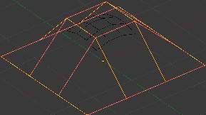
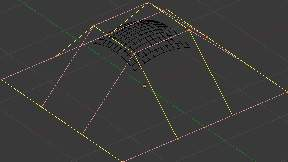

简介¶
Surface.
Curves are 2D objects, and surfaces are their 3D extension. Note however, that in Blender, you only have NURBS surfaces, no Bézier (you have the Bézier knot type, though; see below), nor polygonal (but for these, you have meshes!). Even though curves and surfaces share the same object type (with texts also...), they are not the same thing; for example, you cannot have in the same object both curves and surfaces.
As surfaces are 2D, they have two interpolation axes, U (as for curves) and V. It is important to understand that you can control the interpolation rules (knot, order, resolution) independently for each of these two dimensions (the U and V fields for all these settings, of course).
You may ask yourself “but the surface appears to be 3D, why is it only 2D?”. In order to be 3D, the object needs to have “Volume,” and a surface, even when it is closed, doesn’t have volume; it is infinitely thin. If it had a volume the surface would have a thickness (its third dimension). Hence, it’s only a 2D object, and has only two interpolation dimensions or axes or coordinates (if you know a bit of math, think of non-euclidean geometry - well, surfaces are just non-euclidean 2D planes...). To take a more “real life” example, you can roll a sheet of paper to create a cylinder; well, even if it “draws” a volume, the sheet itself will remain a (nearly...) 2D object!
In fact, surfaces are very similar to the results you get when extruding a curve
Finding Surface Tools¶
Surface Tools.
The panels of the Curve and Surface tab are the same as for curves,
just with fewer options... And as usual, you have the Select and Surface
menus in the 3D视图 headers, and the Specials W pop-up one.
Visualization¶
There is nearly no difference from NURBS curves, except that the U direction is indicated by yellow grid lines, and the V one is materialized by pink grid lines, as you can see in Fig. Surface..
You can hide and reveal control points just as with curves.
Surface Structure¶
Many of the concepts from curves, especially NURBS ones, carry directly over to NURBS surfaces, such as control points, Order, Weight, Resolution, etc. Here we will just talk about the differences.
It is very important to understand the difference between NURBS curves and NURBS surfaces: the first one has one dimension, the latter has two. Blender internally treats NURBS surfaces and NURBS curves completely differently. There are several attributes that separate them but the most important is that a NURBS curve has a single interpolation axis (U) and a NURBS surface has two interpolation axes (U and V).
However, you can have “2D” surfaces made of curves (using the extrusion tools, or, to a lesser extent, the filling of closed 2D curves. And you can have “1D” curves made of surfaces, like a NURBS surface with only one row (either in U or V direction) of control points produces only a curve...
Visually you can tell which is which by entering 编辑模式 and looking at the 3D视图 header: either the header shows Surface or Curve as one of the menu choices. Also, you can extrude a whole NURBS surface curve to create a surface, but you cannot with a simple NURBS curve.
Control Points, Rows and Grid¶
Control points for NURBS surfaces are the same as for NURBS curves. However, their layout is quite constraining. The concept of “segment” disappears, replaced by “rows” and the overall “grid”.
A “row” is a set of control points forming one “line” in one interpolation direction (a bit similar to edge loops for meshes). So you have “U-rows” and “V-rows” in a NURBS surface. The key point is that all rows of a given type (U or V) have the same number of control points. Each control point belongs to exactly one U-row and one V-row.
All this forms a “grid”, or “cage”, the shape of which controls the shape of the NURBS surface. A bit like a lattice ...
This is very important to grasp: you cannot add a single control point to a NURBS surface; you have to add a whole U- or V-row at once (in practice, you will usually use the Extrude tool, or perhaps the Duplicate one, to add those...), containing exactly the same number of points as the others. This also means that you will only be able to “merge” different pieces of surfaces if at least one of their rows match together.
Surface Resolution¶
Just like NURBS curves, Resolution controls the detail of the surface. The higher the Resolution the more detailed and smoother the surface is. The lower the Resolution the rougher the surface. However, here you have two resolution settings, one for each interpolation axis (U and V). Note that unlike with curves, you have only one resolution (the Resol U and V fields, in the Curve Tools panel)...

Resolution 1×1. |

Resolution 3×3. |
Fig. Resolution 1×1. is an example of a surface resolution of 3 for both U and V. Fig. Resolution 3×3. surface is an example of a surface resolution of 12 for both U and V.
Resolution panel.
You can adjust the resolution separately for both preview and render, to not slow things down in the viewport, but still get good render results.
Closed and Open Surfaces¶
Like curves, surfaces can be closed (cyclical) or open, independently in both directions, allowing you to easily create a tube, donut or sphere shape, and they can be drawn as “solids” in 编辑模式. This makes working with surfaces quite easy.
Knots¶
Just like with NURBS curves, NURBS surfaces have two knot vectors, one for each U and V axis. Here again, they can be one of Cyclic, Endpoint, or Bézier, with the same properties as for curves. And as with curves, only open surfaces (in the relevant direction) are affected by this setting...
Endpoint U.
In Fig. Endpoint U. the U interpolation axis is labeled as “U” and the V interpolation axis is labeled as “V”. The U’s interpolation axis has been set to Endpoint and as such the surface now extends to the outer edges from E1 to E2 along the U interpolation axis.
To cause the surface to extend to all edges you would set the V’s axis to Endpoint as well.
Order¶
One more time, this property is the same as with NURBS Curves; it specifies how much the control points are taken into account for calculating the curve of the surface shape. For high Orders 1 the surface pulls away from the control points, creating a smoother surface - assuming that the Surface Resolution is high enough. For lowest Orders 2 the surface follows the control points, creating a surface that tends to follow the grid cage.
Order 2 and order 4 surface.
For illustration purposes, in both Fig. Order 2 and order 4 surface., the knot vectors were set to Endpoint, causing the surface to extend to all edges.
You can set independently the order for each interpolation axis, and like curves, it cannot be lower than 2, and higher than 6 or the number of control points on the relevant axis.
Weight¶
{kind=link}
One control point with a weight of 5.
Guess what? Yes, it works exactly like NURBS Curves ! Weight specifies how much each control point “pulls” on the curve.
In Fig. One control point with a weight of 5. a single control point, labeled “C”, has had its Weight set to 5.0 while all others are at their default of 1.0. As you can see, that control point pulls the surface towards it.
If all the control points have the same Weight then each effectively cancels each other out. It is the difference in the weights that cause the surface to move towards or away from a control point.
The Weight of any particular control point is visible in the
变换 Properties panel
N, in the W field (and not the Weight field...).
Preset Weights¶
{kind=link}
A sphere surface.
NURBS can create pure shapes such as circles, cylinders, and spheres (note that a Bézier circle is not a pure circle). To create pure circles, globes, or cylinders, you must set to specific values the weights of the control points - some of which are provided as presets in the Curve Tools panel (lower right corner). This is not intuitive, and you should read more on NURBS before trying this.
To create a sphere with 2D surfaces, its the same principle as with a 2D circle - you will note that the four different weights needed for creating a sphere (1.0, 0.707 = sqrt(0.5), 0.354 = sqrt(2)/4, and 0.25).
Primitives¶
To help get started in creating surfaces there are four preset NURBS surfaces, found in the .
NURBS surface primitives.
There are also two preset NURBS surface curves (with only one control point on each V-row): NURBS Curve and NURBS Circle.
NURBS curve primitives.
Note how a circle NURBS surface is never filled, unlike its “real” curve counterpart...